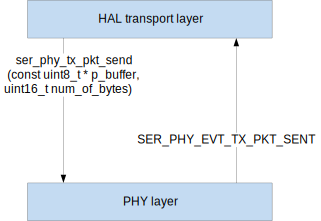
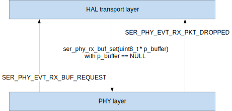
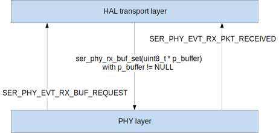

This information applies to the following SoftDevices: S132, S140, S212, S332
The Serialization PHY library declares functions and definitions of data structures and identifiers (typedef enum) that are used as API of the serialization PHY layer.
- Rationale
- Each specific PHY layer (SPI, I2C, UART, low power UART etc.) should provide the same API. This allows the layer above (the HAL Transport layer), which is responsible for controlling the PHY layer, memory management, CRC, retransmission etc., to be hardware independent.
- Interlayer communication and control
- The PHY layer is controlled by the HAL transport layer by calling functions declared in the Serialization PHY library.
- The PHY layer communicates events to the HAL transport layer by calling a callback function. A handler to this function is passed in the ser_phy_open function. This callback function should be called with a parameter of type ser_phy_evt_t, filled accordingly to an event to be passed. Types of supported events are defined in ser_phy_evt_type_t.
- For example, to pass an event indicating that an RX packet has been successfully received, first a struct of type ser_phy_evt_t must be filled: Then, the callback function must be called: All functions declared in the Serialization PHY file (ser_phy.h) must be implemented. Some events specified in ser_phy_evt_type_t are optional to implement.
- Transmitting a packet
- Each PHY layer is responsible for adding the PHY header to a packet to be sent. This header consists of a 16-bit field that carries the packet length (the uint16_encode function defined in app_util.h should be used to ensure endianness independence). A pointer to a packet to be sent and length of the packet are parameters of the ser_phy_tx_pkt_send function. When a packet has been transmitted, an event of type SER_PHY_EVT_TX_PKT_SENT should be emitted.

TX - interlayer communication
- Receiving a packet
- The PHY layer should be able to store only the PHY header (16-bit field carrying the packet length). After the PHY header has been received, the transmission is stopped and the PHY layer must send a request to the HAL transport layer for memory to store the packet - an event of type SER_PHY_EVT_RX_BUF_REQUEST with event parameters defined in ser_phy_evt_rx_buf_request_params_t (the uint16_decode function defined in app_util.h should be used for header decoding to ensure endianness independence). The transmission should be resumed when the ser_phy_rx_buf_set function has been called.
- When the ser_phy_rx_buf_set function parameter equals NULL, there is not enough memory to store the packet. However, the packet will be received to a dummy location to ensure continuous communication. After receiving has finished, an event of type SER_PHY_EVT_RX_PKT_DROPPED is generated.

RX dropping - interlayer communication
- When the ser_phy_rx_buf_set function parameter is different than NULL, the packet is received to a buffer pointed to by it. After receiving has finished, an event of type SER_PHY_EVT_RX_PKT_RECEIVED is generated with event parameters defined in ser_phy_evt_rx_pkt_received_params_t.

RX - interlayer communication
- PHY layer errors
- PHY layer errors can be signaled by an event of type SER_PHY_EVT_RX_OVERFLOW_ERROR or SER_PHY_EVT_TX_OVERREAD_ERROR or SER_PHY_EVT_HW_ERROR with event parameters defined in ser_phy_evt_hw_error_params_t.
- Available PHY layers
- The following PHY layers are available: